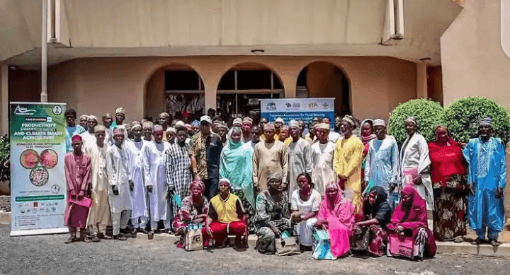

Kíkó Agbara fun Àyípadà Oju-ọjọ
Ikẹkọ Ṣiṣe Irugbin Oju-ọjọ Ọmọde jẹ eto pataki ti a ṣe lati fi imọ ati ọgbọn fun awọn agbẹ ati awọn akosemose oko ni ọna ṣiṣe irugbin to ga julọ ti o le farada ipa ayipada oju-ọjọ. Ikẹkọ naa bo awọn koko bii yiyan irugbin ti o le koju igbona, mimu irugbin ti n dagba yarayara, ati imuse awọn iṣe oko alagbero ti o n tọju omi ati mu ilera ilẹ pọ si. Eto yii ṣe pataki lati rii daju pe iṣẹ-ogbin le tẹsiwaju lati jẹ aṣeyọri paapaa nigba ojo ati ayika to n yipada.